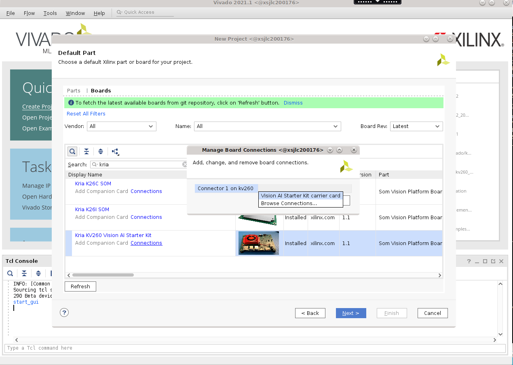
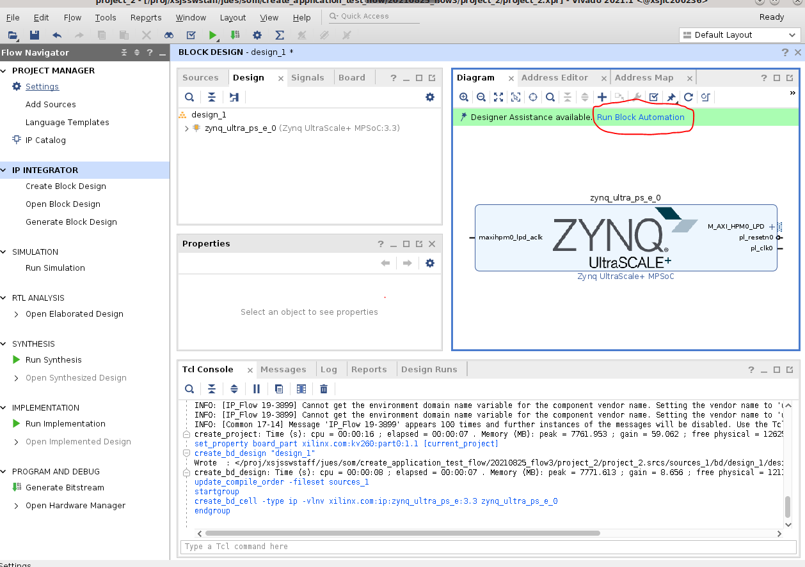

Generate a Vivado Project from Board Files¶
This tutorial details how to generate a base Vivado Project for your StarterKit from Vivado board files.
Assumption: AMD provided SOM carrier card with associated Vivado board file automation
Input: Vivado SOM Starter Kit board files
Output: .bit or .xsa files
Prerequisites and Assumptions¶
This document assumes that developers will use Vivado versions in which their target starter kit is available in. For an example:
KV260 board file is available in Vivado 2021.1 and later
KR260 board file is available in Vivado 2022.1 and later
KD240 board file is available in Vivado 2023.1 and later
Refer to Wiki for a list of board files required, tool versions that support them.
Tool requirement:
Vivado tools installation with the appropriate version
Apply Vivado Board File Preset¶
This flows starts with Vivado board files containing information on K26, K24, KV260 CC, KR260 CC or KD240 CC.
The K26/K24 SOM is supported in Vivado with board files that automate the configuration of the SOM based peripherals, such as DDR, eMMC (for production SOM), etc.
The KV260/KR260/KD240 StarterKit is supported in Vivado with board files that automate the configuration of both StarterKit SOM and CC based peripherals, such as DDR, USB, Ethernet, etc. It does not contain peripheral such as eMMC by default, as thats available on Production SOM only.
These board files are available in Vivado’s board list in “Create Project” wizard. When Vivado starts, click on Quick Start -> Create Project. Leave everything at default and click next until you are at “Default Part” selections. click on “Boards” and search for the board you want to generate a Vivado design for.

When selecting the Kria starter kit board file, make sure to click on connections and connect the connectors between the StarterKit SOM and the carrier card. Click next and finish.
In Flow Navigator, click on IP integrator -> Create Block Design. In Diagram window, press “+” button to add IP, Search for PS to add Zynq UltraScale+ MPSoC.
Once Zynq_ultra_ps_e_0 block is added to a design, make sure to click Run Block Automation, keeping Apply Board Preset selected to apply board file settings.

Optional: Make the Platform an Extensible Platform¶
If the project is meant for a Vitis platform, developers can now indicate that the platform is an Extensible Vitis Platform. More details on how to create Extensible Platform can be found in UG1393
Project Manager -> Settings -> General -> check “Project is an extensible Vitis Platform”

Then check window -> platform setup to select interfaces to be exposed as a platform. Below is an example snapshot indicating Vivado is reserving pl_ps_irq0 for the platform to interface with Vitis accelerators.
Clean Up or Connect Interfaces¶
By default, the board preset have enabled HPM0 and HPM1. If they are not connected, you will get an error when trying to generate .xsa or bitstream. To remove them, in Block Design window -> Diagram and double click on the “Zynq UltraScale + MPSoC” block. Go to PS-PL Configuration -> PS-PL Interfaces -> Master Interfaces to uncheck AXI HPM0 FPD and AXI HPM1 FPD interfaces before clicking OK:
Generate Wrapper¶
We need to now generate a wrapper or top module for the block design:
Block Design window -> sources window -> Design Sources -> right click on design_1 and select Generate HDL wrapper:
In the pop-up, select “Let Vivado manage wrapper and auto-update” and press OK.
Generate bitstream¶
Now we are ready to generate bitstream. To generate bitstream, click on Program and Debug -> Generate Bitstream. This process will take some time.
Optional: After .bit file has been generated, we may need to convert it to .bit.bin file, a format that xmutil is expecting:
```shell
cd $kv260-vitis/platforms/vivado/kv260_ispMipiRx_vcu_DP/project/kv260_ispMipiRx_vcu_DP.runs/impl_1/
echo 'all:{kv260_ispMipiRx_vcu_DP_wrapper.bit}'>bootgen.bif
bootgen -w -arch zynqmp -process_bitstream bin -image bootgen.bif
mv kv260_ispMipiRx_vcu_DP_wrapper.bit.bin kv260-smartcam-raspi.bit.bin
```
Generate .xsa file¶
After generating bitstream, we can generate a .xsa file for either Yocto, PetaLinux, or Vitis to import. Go to File -> Export -> Export Hardware to launch the Export Hardware Platform wizard. This wizard can also be launched by Export Platform button in Flow Navigator or Platform Setup window.
Click through next, leaving most in default except in Select Platform State select Pre-synthesis, enable Include Bitstream
Click Finish.
A .xsa file is generated. The export path is reported in the Tcl console.
License¶
Licensed under the Apache License, Version 2.0 (the “License”); you may not use this file except in compliance with the License.
You may obtain a copy of the License at http://www.apache.org/licenses/LICENSE-2.0
Unless required by applicable law or agreed to in writing, software distributed under the License is distributed on an “AS IS” BASIS, WITHOUT WARRANTIES OR CONDITIONS OF ANY KIND, either express or implied. See the License for the specific language governing permissions and limitations under the License.
Copyright© 2023 Advanced Micro Devices, Inc